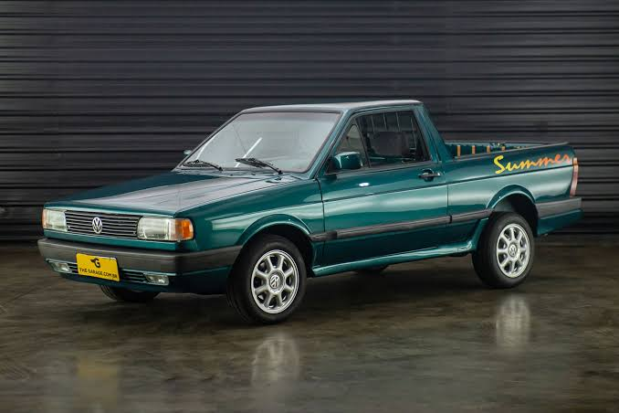

OLDSCHOOL
Ficha Técnica
Ano
1997 - 1999
Motor
1.8 | 4 cilindros
Potência
99 cv
Câmbio
Manual | 5 marchas
Tração
Dianteira
Carroceria
Picape
Combustível
Gasolina
FIPE
R$ 20.000 ~ R$ 45.000
A picape que virou símbolo dos anos 90
A Saveiro Summer foi uma versão especial da tradicional picape da Volkswagen, trazendo um visual mais descontraído e equipamentos que combinavam com a proposta jovem da época. Com mecânica simples, boa capacidade de carga e o estilo marcante da Saveiro, conquistou seu espaço e hoje é lembrada como uma das versões especiais mais interessantes da picape nacional.